Wasdale, Lake District
Dates: 12 June - 14 June 2015
My first wild camping trip. I got introduced to the Walking Club members: Kerrie, Imogen, Jaya, Grainne, Natasha Ng, some of whom I’d meet again in subsequent trips.
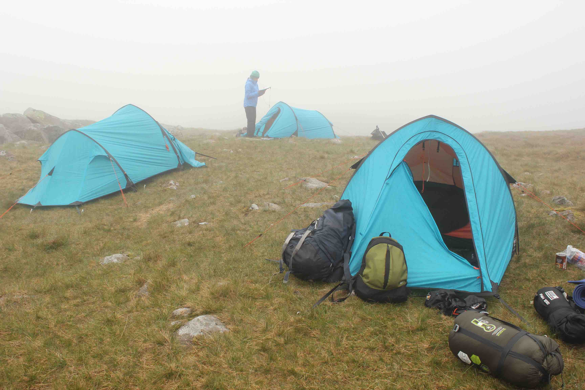
We climbed Scafell Pike, England’s highest peak. The climb was a bit rocky and not very pleasant.
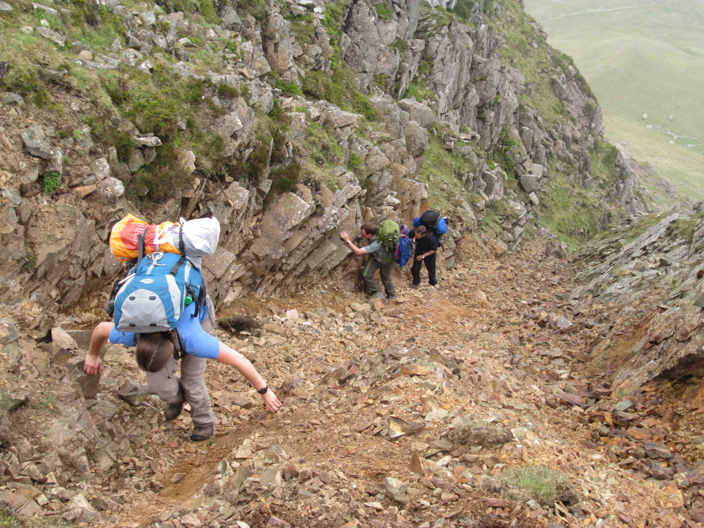
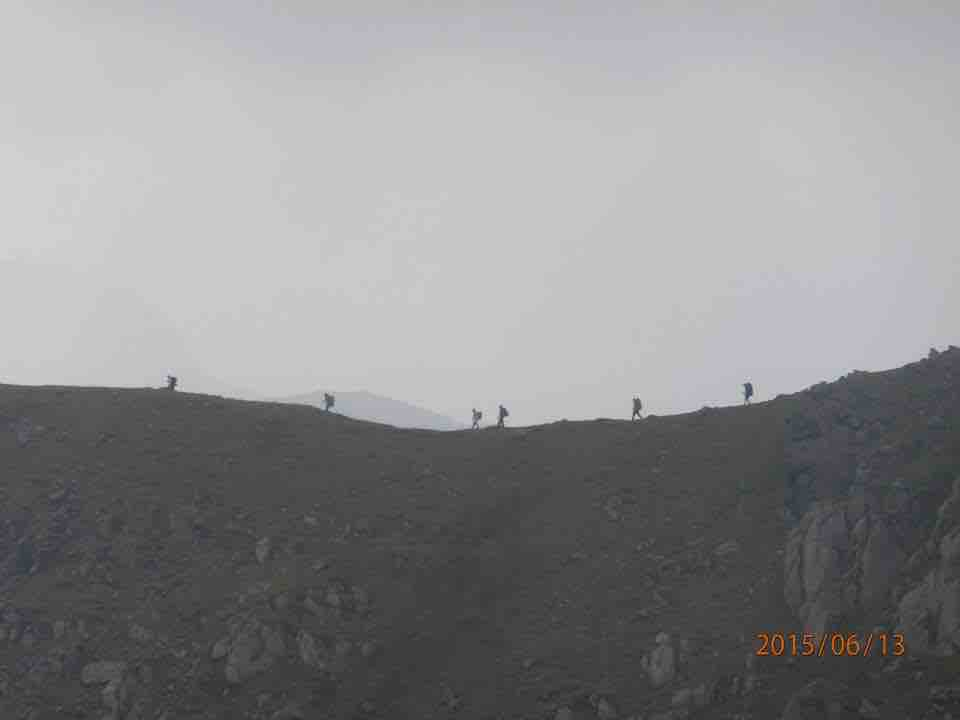
On our way back from Scafell Pike, we got a bit lost and separated from our group. Kerrie seemed to like the Elton John music that I played to calm the nerves.
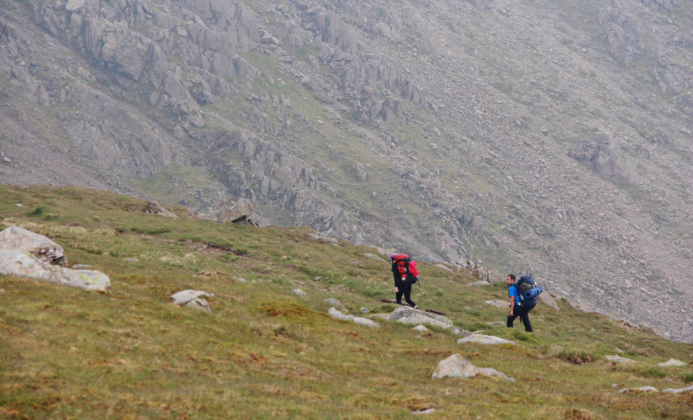
Exmoor
Dates: Late June With Shohini and Duja
Cliff Railway Whortelberry Jam
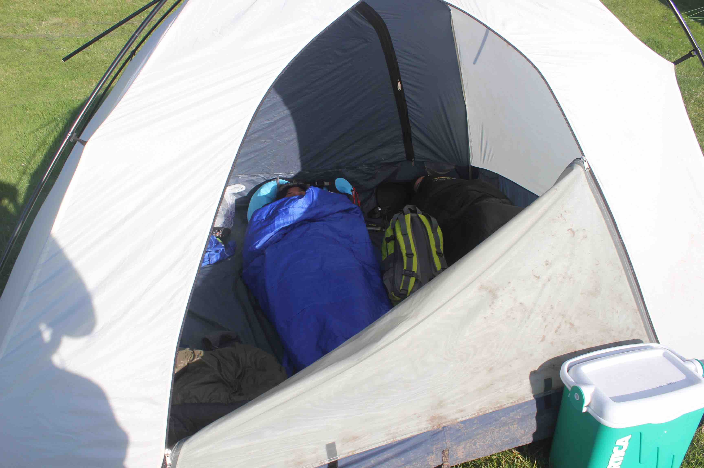
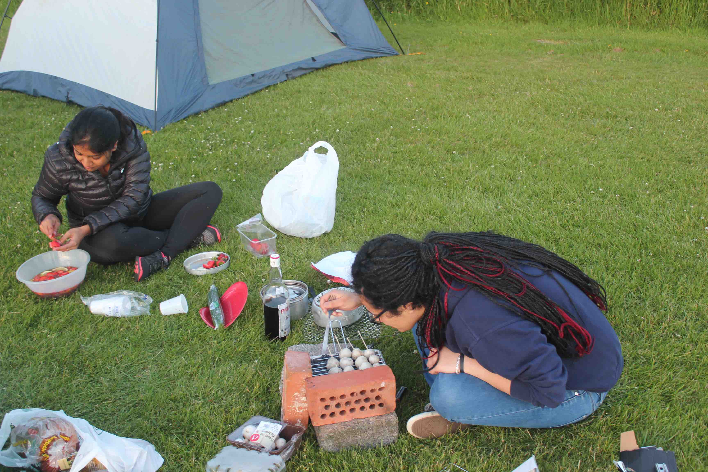
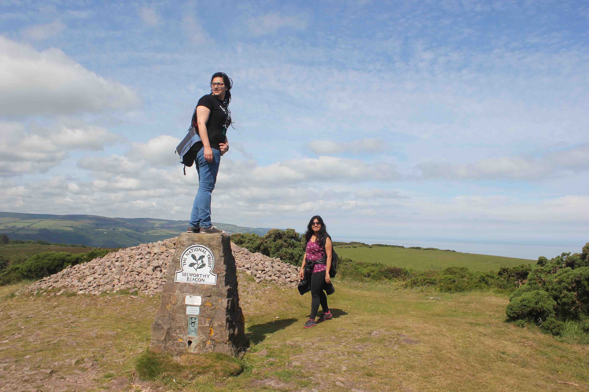
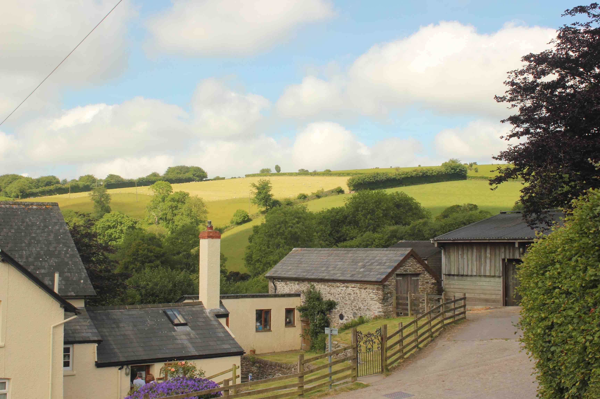
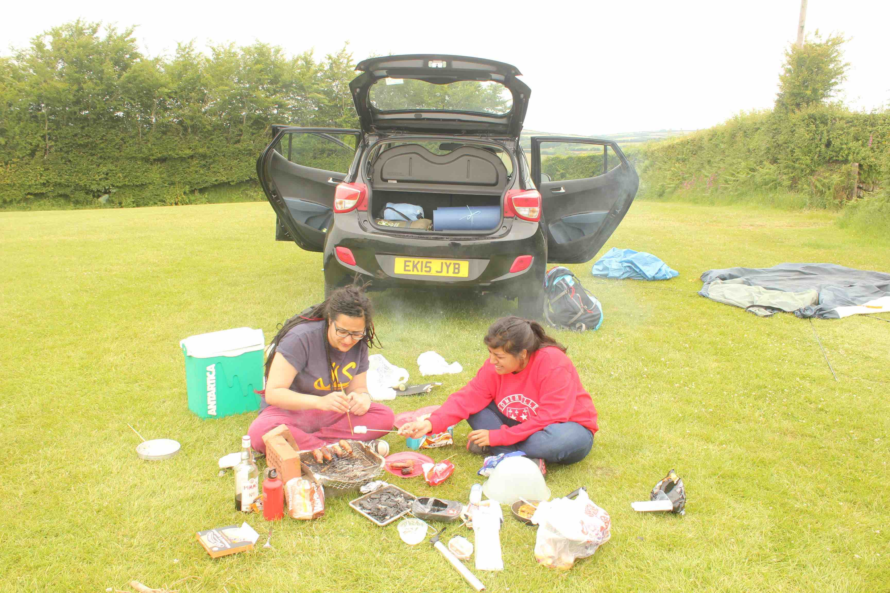
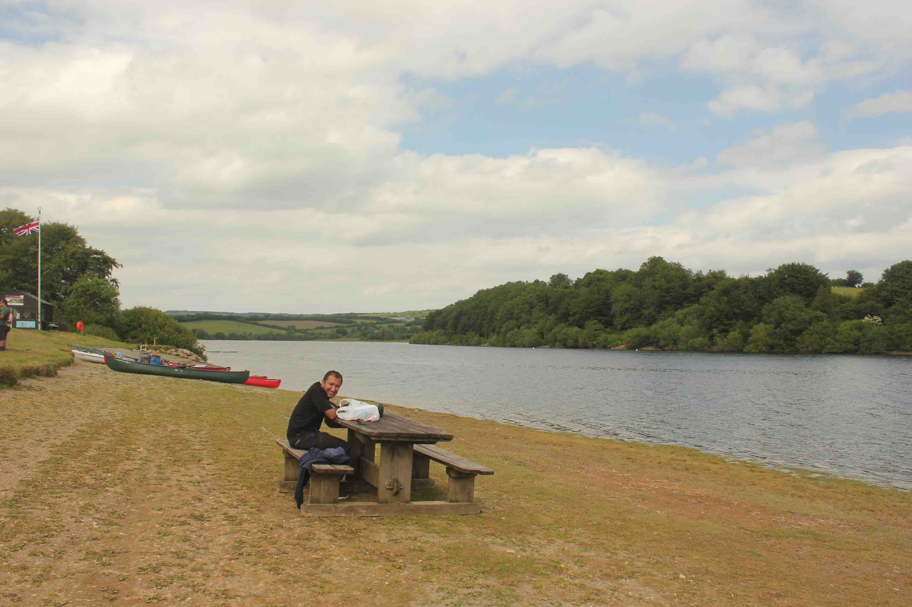
Snowdonia
Dates: Friday 13th nov - Sunday 15th November 2015 (Michaelmas 2015)
Accommodation and walks: The hut we will be staying in is close to Tryfan which is a mountain in the Ogwen Valley. It forms part of the Glyderau group, and is one of the most famous and recognisable peaks in Britain, having a classic pointed shape with rugged crags and a nice ridge traverse
People: Jaya John, Kathryn Newton, Monty, Isla, Luke Turner
I read Nagel’s “The View From Nowhere”
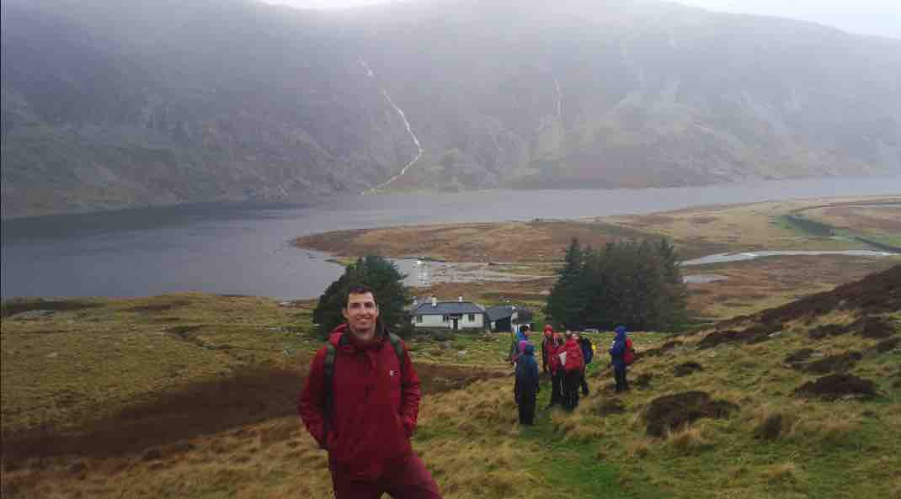
Mostly raining.
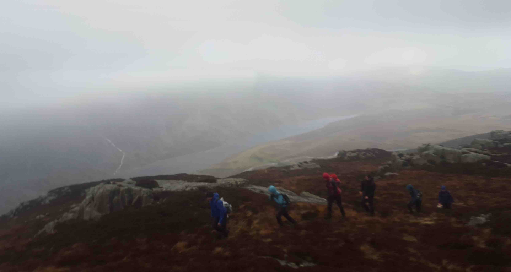
North York Moors
Dates: 2 Sept 2016 - 4 Sept 2016
Places: Robinhood’s Bay. Hogsmeade Railway Station.
People: Pankaj Pansari, Vikram Sridhar, Grainne
Accommodation and walks: We will be staying at the bunkhouse barn at Abbot’s House Farm at Goathland. It is on a farm of about 40 acres in the heart of the North Yorkshire Moors National Park and is an hour away from the city of York. It’s also close to the coastal paths.
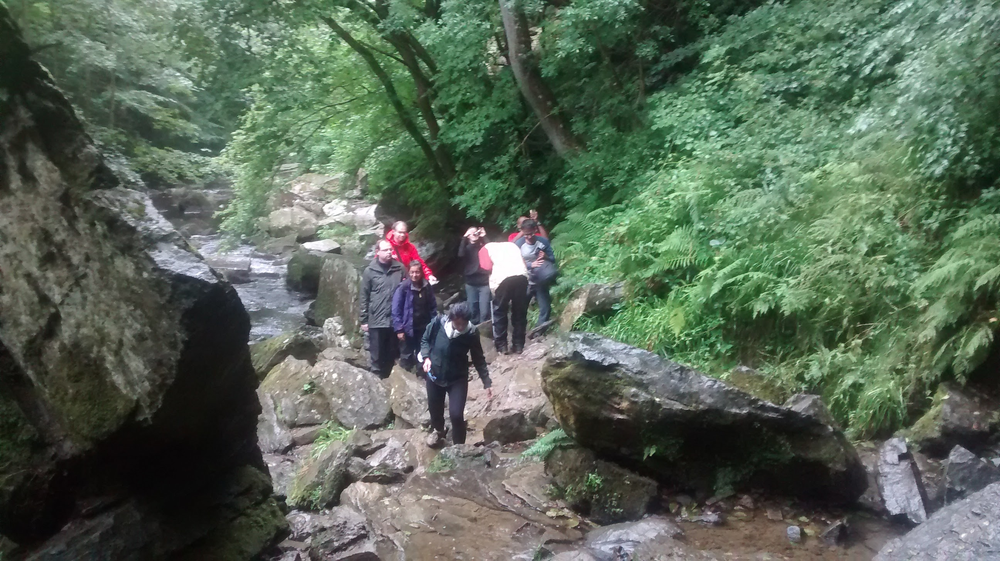
South Downs
This was a weekend at Exton Park Vineyard with Sourav Kalra and his partner.
Friday was Valentine’s Day formal at Hughes’ Hall, and on Saturday we had brunch at Kings College before heading down south.
On our way back, we visited Winchester.
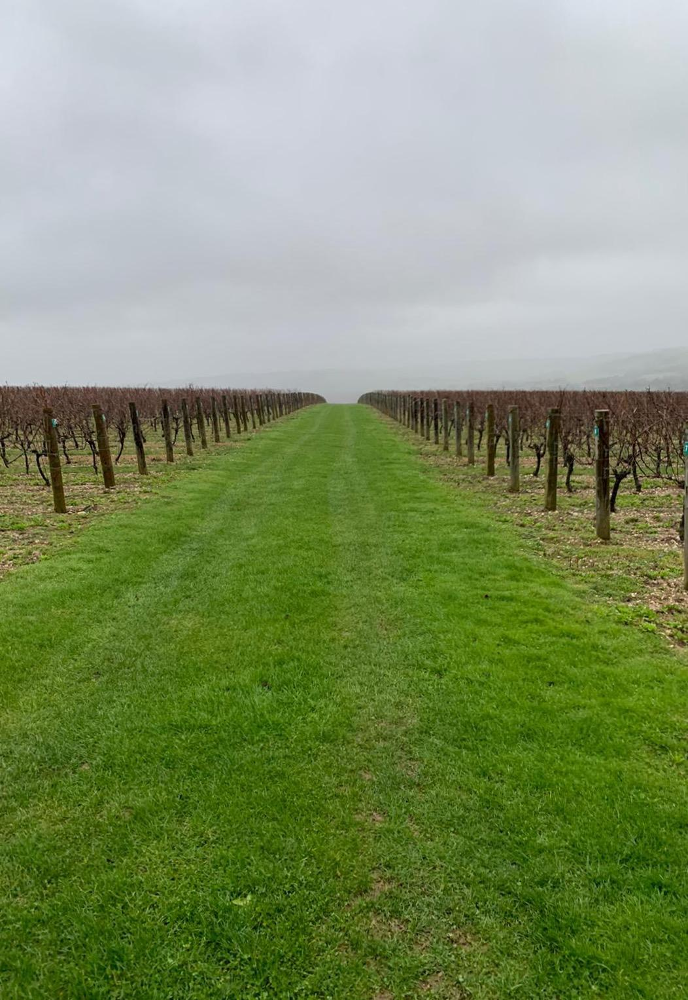